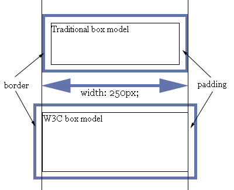
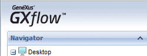
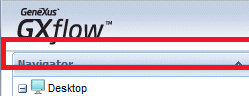
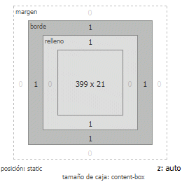
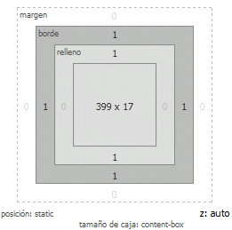

Considerations when changing the HTML Document type property
This article details the considerations to take into account when changing the HTML Document type property. Up to GeneXus X Evolution 1 the default value is "Do not specify". Pages generated with the "Do not specify" value don’t have a doctype specified on the page header. Therefore ’no doctype’ means the browser will act in quirks mode. Contrarily, when changing the HTML Document Type property value to other value (take into account the Xev2 default value in new KBs is HTML5); a doctype header is added; therefore the browser will act in strict mode (according to pure standards - Standards Compliance Mode). Specifically, this means you're using the W3C Box model now which computes width/height for block elements differently than quirks mode. The issue can cause visualization differences when comparing a GeneXus generated application with HTML5 or other standard value vs the do not specify value. Box modelsIn the W3C box model, the width of an element gives the width of the content of the box, excluding padding and border. In the traditional box model, the width of an element gives the width between the borders of the box, including padding and border.  Known IssuesThe following section details known issues when modifying the HTML Document type property to a value other than "do not specify". Image within a Div tagIn some cases, when rendering an image a visual difference could be detected. For example check this image:  The same application generated using HTML5 or other standard, will render using Strict Mode and the following difference will appear:  To solve the issue, edit the Image class associated to the Theme Object and set the vertical-align property to middle. Width and Height Control propertiesWhen using fixed Height and Width values for a control in a Webpanel, take into account that the box-model changed; change the margin, padding, width or height accordingly. For Example, supose the following WebPanel generated in Xev1 using Height:21px (fixed value) When using the Strict Mode, and as the padding and border are no longer contained within the height property, the control will be rendered "higher":
Notice the difference in size because of the Box model change (4 pixels added to the control height):  To solve this particular issue, you can change the control height property from 21px to 17px.  See Also http://en.wikipedia.org/wiki/Internet_Explorer_box_model_bug
|